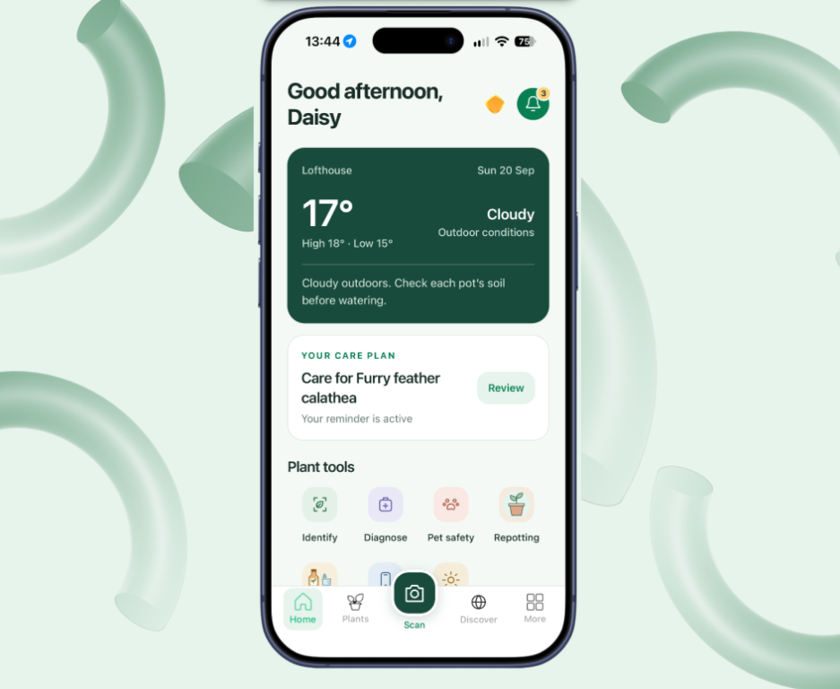
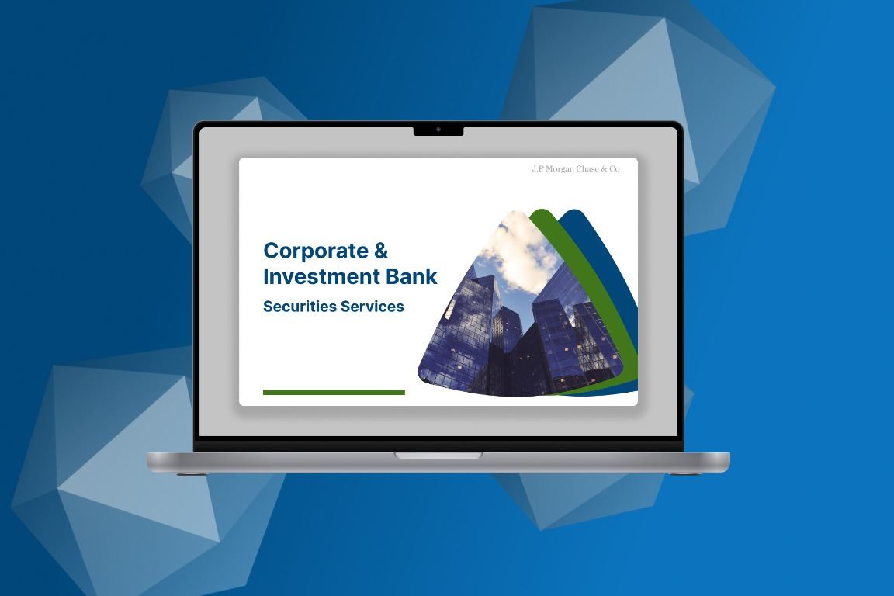
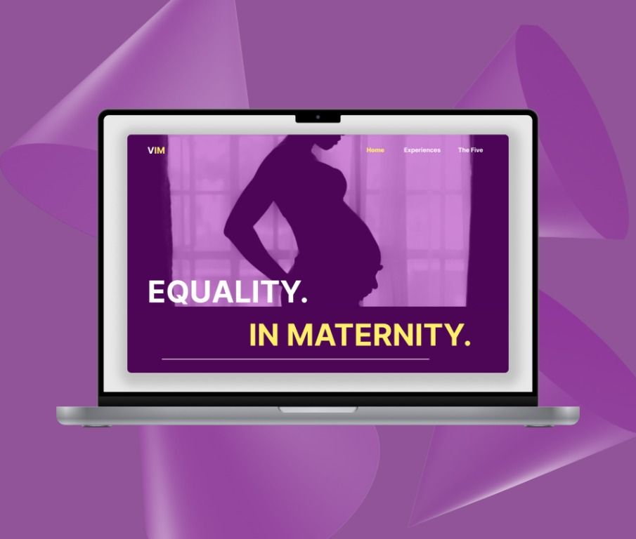
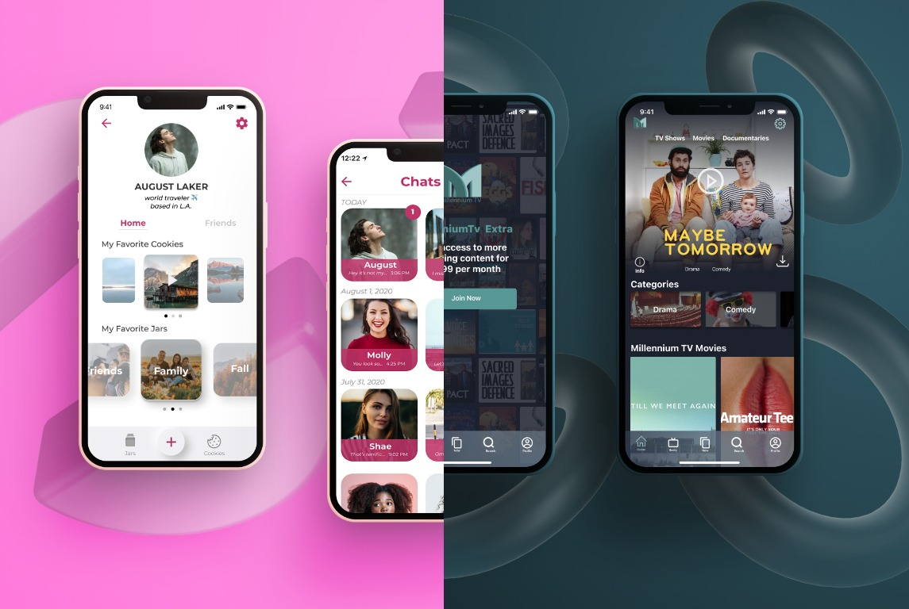
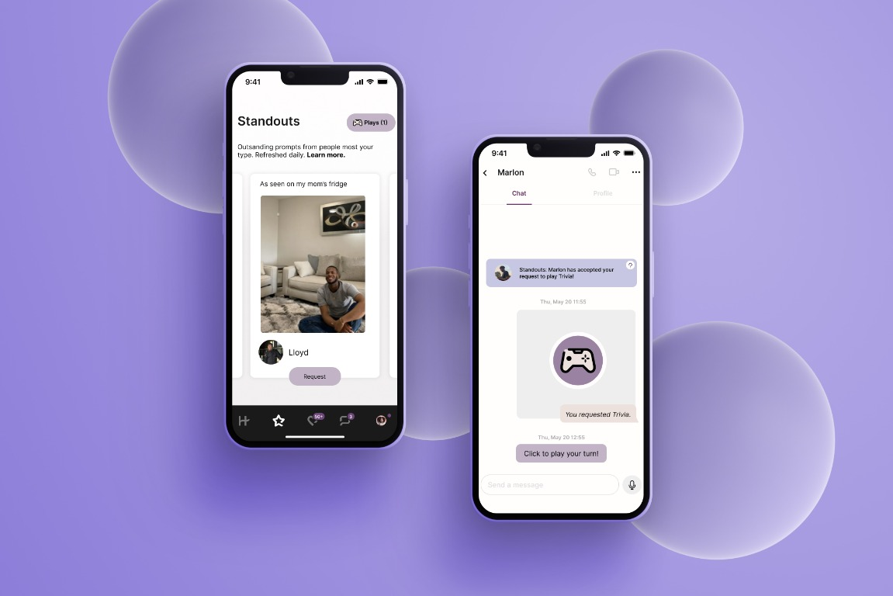
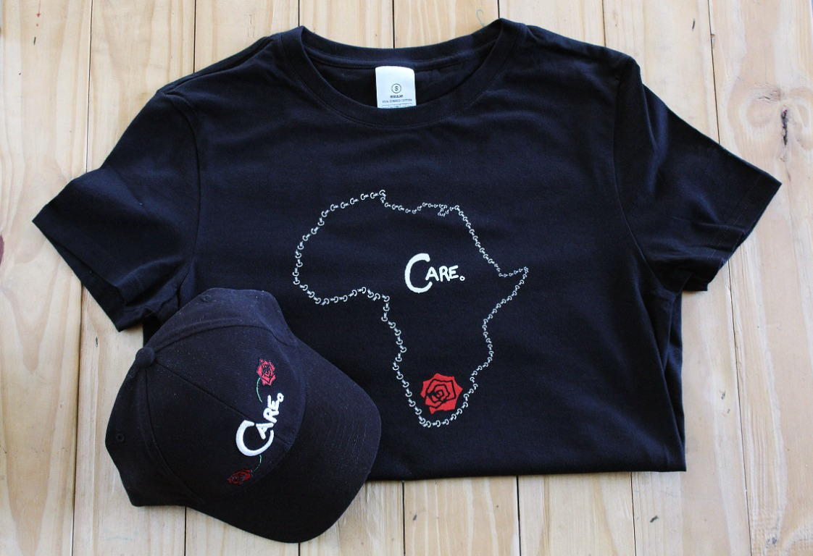

LetPlant Redesign
Led the visual redesign of an AI plant-care app with 14,000+ users across iOS and Android — bringing key features forward and making everyday care easier to navigate.
Daisy Owei / Product Designer

London-based Product Designer at J.P. Morgan. I design enterprise data tools, consumer apps, and the spaces in between — with clarity, empathy, and a little play.
Inside my process
Design with clarity and empathy. Help people help themselves.
My screenwriting background shapes structure and sequence.
Simplify complexity. Make someone’s life a bit easier.
Piano since 5. Portrait sketches. Two cats. Vanilla ice cream + one wildcard.

Led the visual redesign of an AI plant-care app with 14,000+ users across iOS and Android — bringing key features forward and making everyday care easier to navigate.

Designing enterprise data tools for a global investment bank, simplifying complex financial information for the people who use them every day.

Designing for equity in maternal healthcare. Final Year Capstone.
Bonus projects

Small, thoughtful design improvements that make complex products clearer and easier to use.
Early career case studies

A feature-design project exploring a more thoughtful experience for making connections.
Visualising internet health to make complex information and patterns easier to understand.
Personal and social impact

A consumer app for habit-building and follow-through. Currently in progress, so the screens are still evolving.

A community-focused project bringing design and social impact together.
Let’s connect
Feel free to say hi, ask me what I’m currently designing, or anything else!